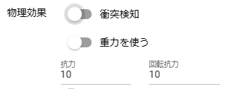

18.1. Basics of VR/AR
18.1.1. Confirmed environments/functions
VR/AR in this app is used by switching from the normal app screen. Since it is not always in VR/AR state, you can also use the normal screen on VR devices.
Meta Quest browser (VR/AR)
PICO browser (VR/AR)
Browser (including PWA) on a PC connected via Quest Link (VR)
Mobile device(AR)
Hint
For Quest Link connection, we recommend a wired connection rather than Air Link. Even with Air Link, you can expect much faster operation than the browser of a VR device, but flickering will occur when you actually move the motion.
If you reduce the page magnification of your browser to about 80%, it will be easier to use on the normal screen. (Since the resolution is high when using Oculus Link, page magnification is not particularly necessary.)
18.1.2. Limitations
Both VR/AR cannot be used on each OS version (Electron version) on a PC connected via Quest Link.
Since this application is built with WebGL, it is highly dependent on the performance of each device that can use the browser. Each OS has more limitations than native apps. Also, switching between the normal screen and the VR/AR screen requires some effort, so we recommend that you save frequently in either project, motion, or pose file format.
Camera objects cannot be played in VR/AR space. If you use it in combination with OtherObject’s render texture function, you can view images from another camera even in VR/AR space.
SystemEffect is not reflected in VR/AR space.
18.1.2.1. About the function to open a separate window
Functions that open another window, such as the keyframe setting window and pose/motion window, are replaced with tabs.
- Meta Quest3
Since you can separate tabs by dragging them to another window, you will be able to use this app on two or more screens.
- PICO4
The PICO4 browser can install web applications using the PWA method. However, we have confirmed that if you use the function to open a separate window while converting it into a web application on PICO4, the web application screen itself will be replaced with that window.
Apparently this is a PICO specification.
We recommend using PICO4 in a browser.
18.1.3. How to enter VR/AR space
Click the
VRorARbutton on the Home tab of the ribbon bar.

Hint
To set the initial position in VR/AR space, set the
Initial camera positionfor VR/AR in theModeltab of the application settings.If you check
Remember last camera positionin the same tab, it will resume from the previous position the next time you re-enter.
Caution
If the environment is unavailable, you will not be able to press the respective buttons.
Switch to AR space on your mobile device
Perhaps due to the specifications of each OS, it may not be possible to switch correctly at once.
- sign of error:
The virtual controller menu panel is not displayed even when the screen is switched. In that case, go back to the screen and tap the
ARbutton again to switch.
18.1.4. photograph
VR devices come with screenshot and recording functions as standard, so we recommend using them.
Even on mobile devices, please use the standard screenshot and recording functions of each device in VR/AR space.
You can also use the screenshot and recording functions of this app.
18.1.5. Arrange objects according to reality
There may be times when you want to make a 3D model invisible or create depth by matching it to a real wall or object. With this app, you can easily realize it with any VR device.
You can easily add effects that make it seem as if you are aware of reality, which is found in standard settings such as MetaQuest3.
In such cases, use basic shapes and the Cutout shader.
- Way 1
Place the basic shape as OtherObject.
Size and rotate as needed.
Set the shader to
Cutoutin the texture properties.Check whether you can hide behind real walls and objects in the AR space as expected.
- Way 2
Place the basic shape as OtherObject.
Size and rotate as needed.
Press the
Transparencybutton on the left virtual controller.
Hint
The key is to choose a basic shape that matches the actual wall or object and place it well.
Even if you try to move OtherObject after making it a Cutout shader, it will be difficult to move it because it is transparent.
Way 2 is limited to OtherObject, but you can always make it transparent and place it in VR/AR space.
18.1.6. Try using physical effects
From ver 2.4.0, objects such as OtherObject and Effect have a physical effect property. By using this, you will be able to experience not only poses and motions but also new play in VR/AR space.
Creating a new VR/AR app with Unity requires a lot of preparation, but with this app, you can use objects freely by simply changing these settings from the properties.
See Physical effects (common) for each property.